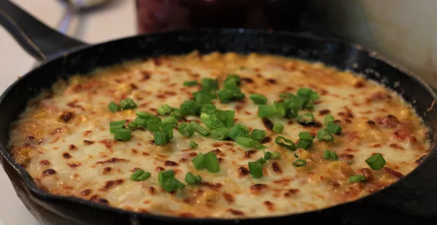

Cheesey Corn

Description
This cheesey, creamy, and somewhat spicy take on your average side of corn is sure to make for a great new side to add to dinner!
Ingredients
- 1 (8 ounce) package bacon, chopped
- 2 (16 ounce) packages frozen sweet corn, thawed
- 4 cloves garlic, minced
- 1 bunch green onions, sliced
- 2 jalapeno peppers, diced, or more to taste
- 1 pinch salt and freshly ground black pepper to taste
- 1 pinch cayenne pepper, or to taste
- 1 cup heavy cream
- 2 ounces shredded mozzarella cheese
- 4 ounces shredded Monterey Jack cheese
Instructions
- Cook bacon in a 10-inch cast iron skillet over medium-high heat, stirring occasionally, until almost crisp and fat is rendered, 7 to 8 minutes.
- Set an oven rack about 6 inches from the heat source and preheat the oven's broiler.
- Drain frozen corn thoroughly in a colander. Add 1/2 of the corn to the skillet with the bacon. Cook and stir until kernels just start to turn
golden brown, 3 to 5 minutes. Add garlic, green onions, and jalapenos; cook until vegetables start to soften and sweeten up, 3 to 4 minutes.
Tilt pan to drain off some of the fat, using a paper towel to soak it up.
- Season with salt, pepper, and cayenne. Pour in cream; stir and bring to a boil. Stir in the remaining corn until heated through.
Turn off the heat and add about 2/3 of the mozzarella and Monterey Jack cheese. Stir to combine. Top corn with remaining cheese
and a sprinkle of cayenne.
- Broil until heated through and top is browned, 5 to 10 minutes. Serve immediately.